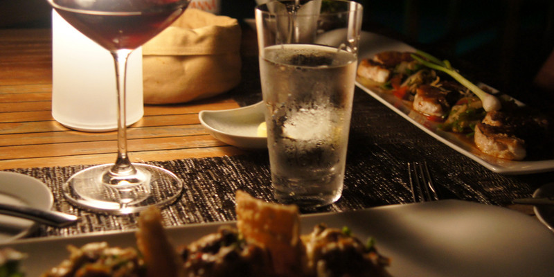
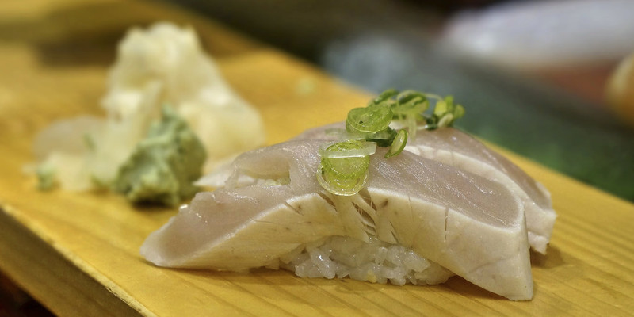

咖尔迪亚
马代很多美食光看名字根本认不出这是什么，
比如咖尔迪亚，其实这是真正的马尔代夫料理，有着悠久的历史，它常出现在马尔代夫人
招待宾客和节庆祝典的宴会上。咖尔迪亚并不是一道菜，更像是一组套餐，
“咖尔迪亚”的主食部分是蒸香焦、薯类或面糕，菜的部分是切碎的洋葱、椰肉和青柠檬汁等，
此外，还有松鱼肉片汤，荤素搭配，营养均衡······
马尔代夫淑女酒
对于酷爱鸡尾酒的朋友来说，它更像是一种独特的饮品，鸡尾酒更象征着一种精致的生活，
一种小资情结。马尔代夫淑女酒是当地的一种特产鸡尾酒，不含酒精但极其香醇浓厚，就
像它名字所说的那样，像是一位尊贵的夫人身上所蕴含的万种风情，每个度假岛屿的酒吧
都有不同的配方，不可错过。

金枪鱼
马尔代夫渔业发达，因此特产也以丰富的海洋水产品为主，当地盛产金枪鱼、鲣鱼、
马鲛鱼和贝类，游客可以在所住的酒店品尝到这些特产。金枪鱼肉质鲜美，营养丰富，
而且脂肪含量很低，深受女士们的欢迎。金枪鱼最经典的吃法是生鱼片，沾上特制的酱料，
非常爽口。不过由于金枪鱼体内重金属含量较高，千万不能贪嘴哦。